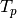
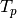
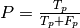
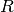
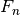
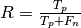
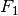
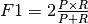
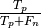
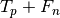

Precision-Recall¶
Example of Precision-Recall metric to evaluate classifier output quality.
In information retrieval, precision is a measure of result relevancy, while recall is a measure of how many truly relevant results are returned. A high area under the curve represents both high recall and high precision, where high precision relates to a low false positive rate, and high recall relates to a low false negative rate. High scores for both show that the classifier is returning accurate results (high precision), as well as returning a majority of all positive results (high recall).
A system with high recall but low precision returns many results, but most of its predicted labels are incorrect when compared to the training labels. A system with high precision but low recall is just the opposite, returning very few results, but most of its predicted labels are correct when compared to the training labels. An ideal system with high precision and high recall will return many results, with all results labeled correctly.
Precision ( ) is defined as the number of true positives ()
over the number of true positives plus the number of false positives
(
) is defined as the number of true positives ()
over the number of true positives plus the number of false positives
( ).
).

Recall () is defined as the number of true positives () over the number of true positives plus the number of false negatives ().

These quantities are also related to the () score, which is defined as the harmonic mean of precision and recall.

It is important to note that the precision may not decrease with recall. The
definition of precision ( ) shows that lowering
the threshold of a classifier may increase the denominator, by increasing the
number of results returned. If the threshold was previously set too high, the
new results may all be true positives, which will increase precision. If the
previous threshold was about right or too low, further lowering the threshold
will introduce false positives, decreasing precision.
) shows that lowering
the threshold of a classifier may increase the denominator, by increasing the
number of results returned. If the threshold was previously set too high, the
new results may all be true positives, which will increase precision. If the
previous threshold was about right or too low, further lowering the threshold
will introduce false positives, decreasing precision.
Recall is defined as , where  does not depend on the classifier threshold. This means that lowering the classifier threshold may increase recall, by increasing the number of true positive results. It is also possible that lowering the threshold may leave recall unchanged, while the precision fluctuates.
The relationship between recall and precision can be observed in the stairstep area of the plot - at the edges of these steps a small change in the threshold considerably reduces precision, with only a minor gain in recall. See the corner at recall = .59, precision = .8 for an example of this phenomenon.
Note
Python source code: plot_precision_recall.py
print(__doc__)
import random
import pylab as pl
import numpy as np
from sklearn import svm, datasets
from sklearn.metrics import precision_recall_curve
from sklearn.metrics import auc
from sklearn.cross_validation import train_test_split
# import some data to play with
iris = datasets.load_iris()
X = iris.data
y = iris.target
X, y = X[y != 2], y[y != 2] # Keep also 2 classes (0 and 1)
# Add noisy features
random_state = np.random.RandomState(0)
n_samples, n_features = X.shape
X = np.c_[X, random_state.randn(n_samples, 200 * n_features)]
# Split into training and test
X_train, X_test, y_train, y_test = train_test_split(X, y, test_size=.5,
random_state=random_state)
# Run classifier
classifier = svm.SVC(kernel='linear', probability=True,
random_state=random_state)
probas_ = classifier.fit(X_train, y_train).predict_proba(X_test)
# Compute Precision-Recall and plot curve
precision, recall, thresholds = precision_recall_curve(y_test, probas_[:, 1])
area = auc(recall, precision)
print("Area Under Curve: %0.2f" % area)
pl.clf()
pl.plot(recall, precision, label='Precision-Recall curve')
pl.xlabel('Recall')
pl.ylabel('Precision')
pl.ylim([0.0, 1.05])
pl.xlim([0.0, 1.0])
pl.title('Precision-Recall example: AUC=%0.2f' % area)
pl.legend(loc="lower left")
pl.show()